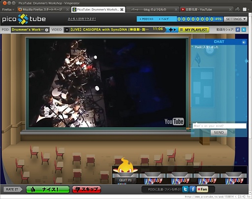
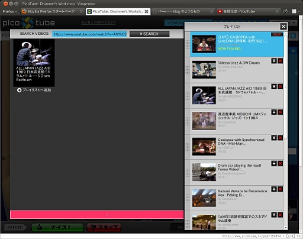
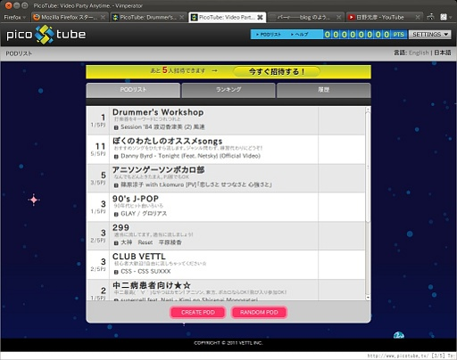
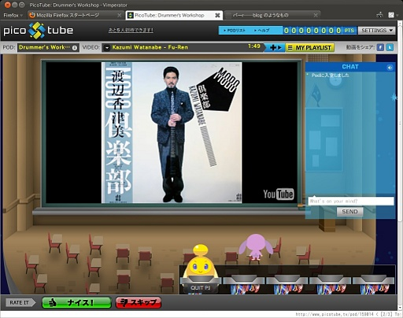
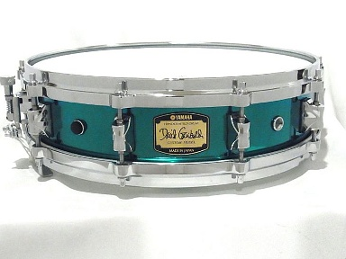

実際に何かを書くかどうかわかりませんし、Web サーバーにおいて公開するかどうかも未定ですが、twitter に向かない内容のメモ置き場としてこのページをつくってみました。ここには技術ネタは書かないつもりです。また使いにくさを感じている tumblr やら Google+ からはこれを期に撤収するかもしれません。……撤収するかな？どうだろ？
おもしろそうなので PicoTube というサービスに入ってみました。どのようなサービスなのかというと仮想的な Live 会場で YouTube の動画をいろんな人と眺めなら付属のチャットをしたり、「この動画の選択はねーわ」とか「お前 DJ を降りろ。俺がやる」とかいったことをして楽しむサービスです。
画面はこのような感じです。わたし一人しかいませんが。ぼっち Micky です。こんにちは。

PicoTube ではこの仮想的な Live 会場を POD と呼びます。また POD に動画を流す人のことを PJ と呼びます。用語や使い方の簡単な説明は PicoTube のサイトを見たほうがいいでしょう。
POD への入室後、自分自身を表すアバターが表示されます。画面右にあるチャットに入力するとアバターの頭上に吹き出しが現れチャットで入力した内容が表示されます。MMORPG のチャットみたいな感じです。
右下にカプセルをのせる台座のようなものがありますが、この台座に空きがあると、空いている台座をクリックすることで PJ になることができます。PJ になるとあなたが作った動画のプレイリストを POD で流すことができます。
プレイリストを作るには画面右上の "MY PLAYLIST" をクリックします。そうすると次のような画面になります。

画面上部の検索窓で YouTube の動画を検索して、表示された各動画のうちお気に入りの動画の + ボタンを押して動画をプレイリストに加えていきます。プレイリストへの登録はこれだけです。
あとはいろんな人達と楽しむだけです。ぼっちじゃない人は！！
最後に POD の作り方ですが、下のログイン直後の画面でおこないます。

"CREATE POD" を押して画面の指示にしたがって、いろいろ入力すればおしまいです。私もためしに Drummer's Workshop という POD を作ってみましたが、ログアウトしてもこれが残っているのかどうかは、まだ確認していません。※
2012.03.08 に長期間放置していた POD Drummer's Workshop が消失していることを確認しました。
なお PicoTube のアカウント認証は Facebook を利用しているので Facebook のアカウントが必要です。※Facebook にアカウントを握られたくない場合は PicoTube も使うことさけた方がいいかもしれません。
自前のアカウント認証が実装されていて Facebook アカウントが必須でなくなっていることを 2012.03.08 に確認しました。
うぉっ。誰かきた！！

眼福ですにゃ。

書くかどうかすらわからないと書いておきながらたくさん書いてしまいました。しかもスクリーンショット入りで。人間 5 分後のことはわからないという孔子の言い伝えどおりですね ( 嘘
古い日記も支障がないのをみつくろって一部復活させるかも。→ させました。
旧年中はたいへんお世話になりました。みなさん、よいお年をお過ごしください。